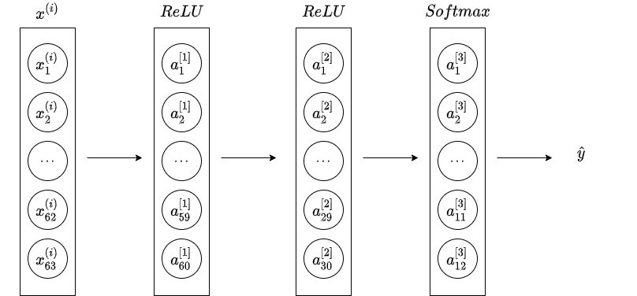

Dig into Apollo(6.0) Prediction¶
PredictionComponent¶
Proc¶
This is a callback function for PerceptionObstacle Reader. If a new message is generated in channel, this function will execute.
1 2 | |
ContainerSubmoduleProcess¶
This is another prediction process which is the same as PredictionEndToEnd. This function is created for Lego architecture, whose communication system may have much difference with current cyber.
PredictionEndToEnd¶
Almost all the work is doing in MessageProcess class.
- Transform all messages(perception/localization/planning/storytelling) to obstacle
message_process.OnPerception- Send the prediction message to channel
MessageProcess¶
Init¶
Initialize following classes with configures:
- ContainerManager
- EvaluatorManager
- PredictorManager
- PredictionMap
OnPerception¶
Prediction module is driven by perception module, which means that once a frame of message is generated by perception, this function is called. The process is:
- use
ContainerProcessfunction to process all messages - insert all messages to a proto file for offline model training
- generate intension of obstacle with
evaluatormodule - generate trajectory of obstacle with
predictormodule
ContainerProcess¶
This function :
- transforms messages from perception/localization/planning to abstract obstacles and
- prioritizes all obstacles to determine if the obstacle is need to consider and
- analyzes scenarios ego vehicle is in of:
- Unknown
- Cruise
- Junction
- builds junction(conditional) and cruise features and
- sets
Cautionpriority of obstacle and - sets the weight of way in a distance to
- -20, for left turn
- -10, for right turn
ObstaclePrioritizer¶
AssignIgnoreLevel¶
This function set obstacle's priority of:
Ignore, which means it's no need to considerNormal, which means it should be considered
And if an obstacle's priority is Normal, it is either:
- in
scan box, which is a rectangular centered on ego vehicle - on lane
- near lane with the type of
pedestrian - near junction
AssignCautionLevel¶
Set the obstacle priority to be Caution if the obstacle is close to ego vehicle and
- in junction(under junction scenario)
- the first obstacle in front of ego vehicle(searched within lane sequence, may not be unique)
- its lane sequence is on ego vehicle's planning trajectory
And if enabled, this function will shrink the number of caution obstacles to a threshold according to distance.
EvaluatorManager¶
EvaluatorManager class to manage all Evaluators' lifecycle and
Init¶
This is a initialization function to initialize:
- semantic map
- all evaluators with configures
- default evaluator types by obstacle's:
- type
- priority(normal/caution)
- status(onlane/offlane/junction)
GetEvaluator¶
You can get the pointer to evaluator by inputing evaluator's type. It's better to use unordered_map(hash) other than map(balanced binary tree) to accumulate the looking up process.
Run¶
This is the main process to evaluate an obstacle's intension(or trajectory) with multiple evaluators.
According to Single Responsibility principle, I don't think it's a good idea to do these stuffs in a manager class.
The function does:
- BuildObstacleIdHistoryMap
- DumpCurrentFrameEnv
- Evaluate obstacles with:
- multiple thread according to
GroupObstaclesByObstacleIdsresults - single thread
- multiple thread according to
BuildObstacleIdHistoryMap¶
Build a feature proto for each obstacle in current frame, every feature proto contains max_num_frames with:
- id
- timestamp
- type
- position(x, y, z)
- theta(heading)
- length
- width
- is_trainable(bool, calculated with the function
IsTrainable)
IsTrainable¶
A helper function defined in evaluator_manager.cc's unnamed namespace. Return false if the obstacle:
- is ego vehicle
- has the priority of
Ignore - is still
- is not vehicle
otherwise, return true;
DumpCurrentFrameEnv¶
Another helper fucntion in unnamed namespace, the main purpose of this is to insert all obstacles' history information to FrameEnv class for output.
GroupObstaclesByObstacleIds¶
This function assigns thread id for each obstacle according to its priority(caution or normal). Each thread has obstacle_num / thread_num obstacle ids(tasks).
CyclistKeepLaneEvaluator¶
The CyclistKeepLaneEvaluator is simple and has only two probability values:
- 1.0, if current lane id is equal to the lane id in lane sequence;
- 0.0, if current lane id is not equal to the lane id in lane sequence.
The lanes sequence is a list of lane id that covers the length:
In equation,
- \(D_{lane}\) is the distance the lane sequance covers;
- \(v_{0}\) is current speed the obstacle has;
- \(t_{max}\) is the predicted trajectory duration, it's 8.0 in program;
- \(a_{max}\) is the maximum linear acceleration of vehicle, it's 4.0 in program;
PedestrianInteractionEvaluator¶
This evaluator follows the paperSocial LSTM: Human Trajectory Prediction in Crowded Spaces. I guess that this evaluator is not completed, because:
- the input trajectory size is only one
- the social part of work is not implemented, and without the social, lstm has little advance over constant velocity model.
CostEvaluator¶
CostEvaluator calculates the probability based on the distance between obstacle and lane boundary.
In the equation:
- \(E_{l}\) is the distance from lane boundary to obstacle's location;
- \(W_{lane}\) is the width of lane;
- \(W_{l}\) is the lateral distance from lane reference line to obstacle's location;
- \(P_{cost}\) is the probability, calculated by a Sigmoid function.
CruiseMLPEvaluator¶

The model has \(23 + 5 * 9 + 8 + 20 * 4 = 146\) inputs, \(23\) of which are obstacle features:
- \(\theta_{filter}\), the average of the latest 5 heading values in an obstacle's history;
- \(\theta_{mean}\), the average of all the heading values in an obstacle's history;
- \(\theta_{filter} - \theta_{mean}\);
- \(\theta_{diff} = \theta_{curr} - \theta_{prev}\), where \(\theta_{curr}\) is the average of the latest \(0 \to 4\) heading values in an obstacle's history, \(\theta_{prev}\) is the average of the latest \(5 \to 9\) heading values;
- \(\theta_{diff}'\), \(\theta'_{diff} = \frac{\theta_{diff}}{\Delta_t}\);
- \(l_{filter}\), the average of the latest 5 lateral distance values in an obstacle's history;
- \(l_{mean}\), the average of all the lateral distance values in an obstacle's history;
- \(l_{filter} - l_{mean}\);
- \(l_{diff} = l_{curr} - l_{prev}\), where \(l_{curr}\) is the average of the latest \(0 \to 4\) lateral distance values in an obstacle's history, \(l_{prev}\) is the average of the latest \(5 \to 9\) lateral distance values;
- \(v\), the velocity of the obstacle;
- \(a\), the acceleration of the obstacle;
- \(j\), the jerk of the obstacle;
- \(D_{lb}\), the distance from obstacle to left lane boundary;
- \(D_{lb}' = \frac{D_{first} - D_{last}}{dt}\), where \(D_{first}\) is the first \(D_{lb}\) of the history, \(D_{last}\) is the last \(D_{lb}\) of the history, \(dt\) is the duration of the history;
- \(D_{lb diff}' = D_{lb curr} - D_{lb prev}\), where \(D_{lb curr}\) is the average of the latest \(0 \to 4\) \(D_{lb}\) values in an obstacle's history, \(D_{lb prev}\) is the average of the latest \(5 \to 9\) \(D_{lb}\) values;
- \(D_{rb}\), the distance from obstacle to right lane boundary;
- \(D_{rb}' = \frac{D_{first} - D_{last}}{dt}\), where \(D_{first}\) is the first \(D_{rb}\) of the history, \(D_{last}\) is the last \(D_{rb}\) of the history, \(dt\) is the duration of the history;
- \(D_{rb diff}' = D_{rb curr} - D_{rb prev}\), where \(D_{rb curr}\) is the average of the latest \(0 \to 4\) \(D_{rb}\) values in an obstacle's history, \(D_{rb prev}\) is the average of the latest \(5 \to 9\) \(D_{rb}\) values;
is_curr_lane_no_turn, this value is \(1\) if current lane isNoTurn, or it's \(0\);is_curr_lane_left_turn, this value is \(1\) if current lane isLeftTurn, or it's \(0\);is_curr_lane_right_turn, this value is \(1\) if current lane isRightTurn, or it's \(0\);is_curr_lane_uturn, this value is \(1\) if current lane isUTurn, or it's \(0\).
And \(5 * 9\) features are obstacle history features, we search \(5\) frames of history, each frame has \(9\) fearures:
is_curr_frame_has_hisotry, the value is \(1\) if current frame and previous frame all have position/velocity/acceleration/velocity_heading information, otherwise it's \(0\);- \(x\), in local coordinate system;
- \(y\), in local coordiante system;
- \(x^{\prime}\);
- \(y^{\prime}\);
- \(x^{\prime\prime}\);
- \(y^{\prime\prime}\);
- \(\theta_{v}\), the heading of velocity;
- \(\theta_{v}^{\prime}\).
\(8\) features are for forward and backward obstacles:
- \(s_{forward}\), the forward obstacle's distance;
- \(l_{forward}\), the forward obstacle's lateral distance;
- \(L_{forward}\), the forward obstacle's length;
- \(v_{forward}\), the forward obstacle's velocity;
- \(s_{backward}\), the backward obstacle's distance;
- \(l_{backward}\), the backward obstacle's lateral distance;
- \(L_{backward}\), the backward obstacle's length;
- \(v_{backward}\), the backward obstacle's velocity;
And the other \(20 * 4\) features are lane features, we choose \(20\) points from the reference line, each of them has 4 features:
- \(s_{point}\), the lane point's distance;
- \(l_{point}\), the lane point's lateral distance;
- \(\psi_{point}\): the heading of the lane point;
- \(\kappa_{point}\): the curvature of the lane point.
The result of CruiseMLPEvaluator is:
- the probability of an obstacle on a lane;
- the time of an obstacle to travel to reference line.
JunctionMLPEvaluator¶

This model has 3 obstacle features:
- \(v\), the velocity of an obstacle;
- \(a\), the acceleration of an obstacle;
- \(S_{junction}\), the area of the junction.
The other \(12 * 5\) features are junction features. We divide area aroud the vehicle to 12 regions and calculate the probability of each exit.
 Each exit has 5 features:
Each exit has 5 features:
is_exit_exist, it's 1 if the exit of junction exists;- \(x_{diff} / S_{junction}\), \(x_{diff}\) is the deviation between obstacle and exit in x direction;
- \(y_{diff} / S_{junction}\), \(y_{diff}\) is the deviation between obstacle and exit in y direction;
- \(L_{diff} / S_{junction}\), \(L_{diff}\) is the distance between obstacle and exit;
- \(\theta_{diff}\), the heading difference between obstacle and exit.
And the output of the model is the probability of an obstacle to exit in 12 directions.